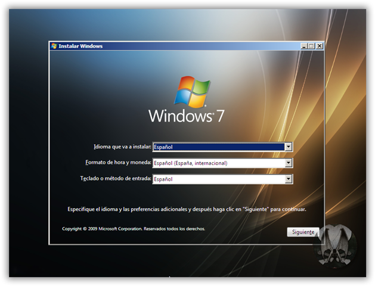
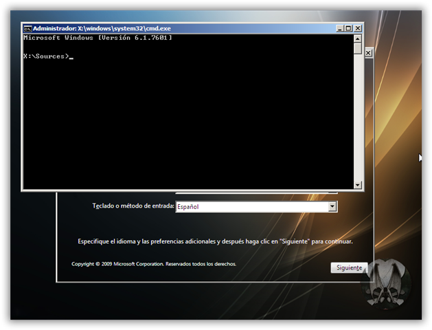
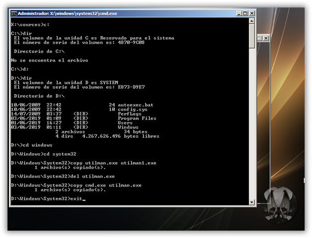
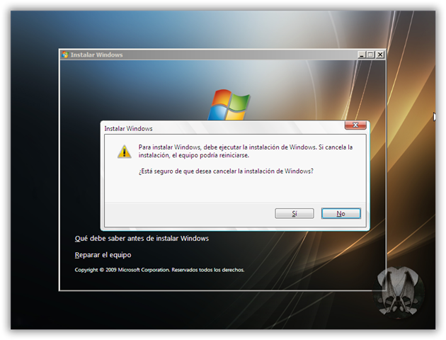
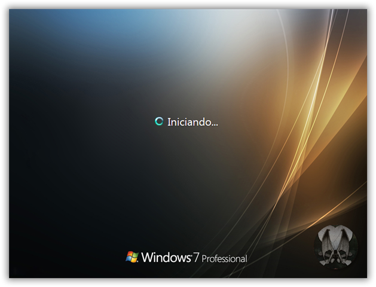
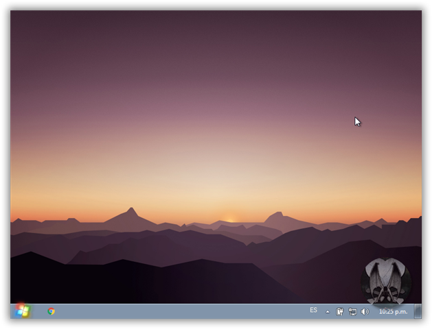

Arrancamos con un DVD o USB de instalación de Windows.

Image 2
En la pantalla de instalación de Windows tenemos que pulsar : Shift + F10, nos abrirá una terminal CMD con permisos de administrador «Simbolo de sistema de windows»

Image 3
Escribimos lo siguiente:
C:
dir
Si aparece lo siguiente:
El volumen de la unidad C es Reservado para el sistema
El número de serie del volumen es: 4870-9C08
Directorio de C:\
No se encuentra el archivo
...continuamos con la siguiente letra (d:) hasta que se muestre la carpeta windows
d:
dir
cd windows
cd system32
ren utilman.exe utilman1.exe
ren cmd.exe utilman.exe
shutdown -r -f -t 00
Microsoft Windows [Versión 6.1.7601]
X:\sources>c:
C:\>dir
El volumen de la unidad C es Reservado para el sistema
El número de serie del volumen es: 4870-9C08
Directorio de C:\
No se encuentra el archivo
C:\>d:
D:\>dir
El volumen de la unidad C es Reservado para el sistema
El número de serie del volumen es: 4870-9C08
Directorio de C:\
10/06/2018 22:42 24 autoexec.bat
10/06/2018 22:42 10 config.sys
10/06/2018 22:42 <DIR> Program Files
10/06/2018 22:42 <DIR> Users
10/06/2018 22:42 <DIR> Windows
2 archivos 32 bytes
3 dirs 4.267.626.496 libres
D:\>cd windows
D:\Windows>cd system32
D:\Windows\System32>ren utilman.exe utilman1.exe
D:\Windows\System32>ren cmd.exe utilman.exe
D:\Windows\System32>shutdown -r -f -t 00
Este ultimo comando hará que se produzca el reinicio de tu ordenador. Recuerda que cuando reinicie el ordenador, ahora tienes que retirar la memoria USB o DVD para que el arranque sea normal y se realice desde el disco duro.
Una vez que se inicie nuestro ordenado y nos situemos en el inicio de sesión del perfil de Windows al que queremos acceder sin conocer la contraseña y hacer clic en el icono en forma de reloj situado en la parte inferior izquierda de la pantalla (W7, W8 y W8.1) varía en W10, ya que aparece en la parte interior derecha.

Image 4
Esto hará que se vuelva abrir de nuevo el CMD con derechosde administrador. Ahora tendremos que introducir los siguientes comandos:
net user
Este es para saber los usuarios, yo cambiaré la contraseña de togangel
net user togangel contraseña
Este es para ponerle al usuario "togangel" la palabra "contraseña" como password de inicio de sesión.
Microsoft Windows [Versión 6.1.7601]
C:\Windows\System32>net user
Cuentas de usuario de \\
----------------------------------------------------------
Administrador DefaultAccount togangel
Se ha completado el comando correctamente.
C:\Windows\System32>net user togangel contraseña
Se ha completado el comando correctamente.
C:\Windows\System32>exit

Image 5
Ahora solo te queda iniciar de sesión de dicho usuario de Windows y solo tendrás que introducir la nueva contraseña creada en el paso anterior para comprobar como ahora si puedes iniciar sesión en el usuario de Windows.

Image 6

Image 7
Nota Importante: Una vez que hayas terminado de realizar todo el tutorial y ya hayas conseguido iniciar sesión en tu cuenta de usuario de Windows, tendrás que volver a renombrar: utilman1.exe y cmd.exe a sus nombres originales para poder trabajar con normalidad.
Microsoft Windows [Versión 6.1.7601]
X:\sources>d:
D:\>cd windows
D:\Windows\>cd system32
D:\Windows\System32>ren utilman.exe cmd.exe
D:\Windows\System32>ren utilman1.exe utilman.exe
D:\Windows\System32>shutdown -r -f -t 00